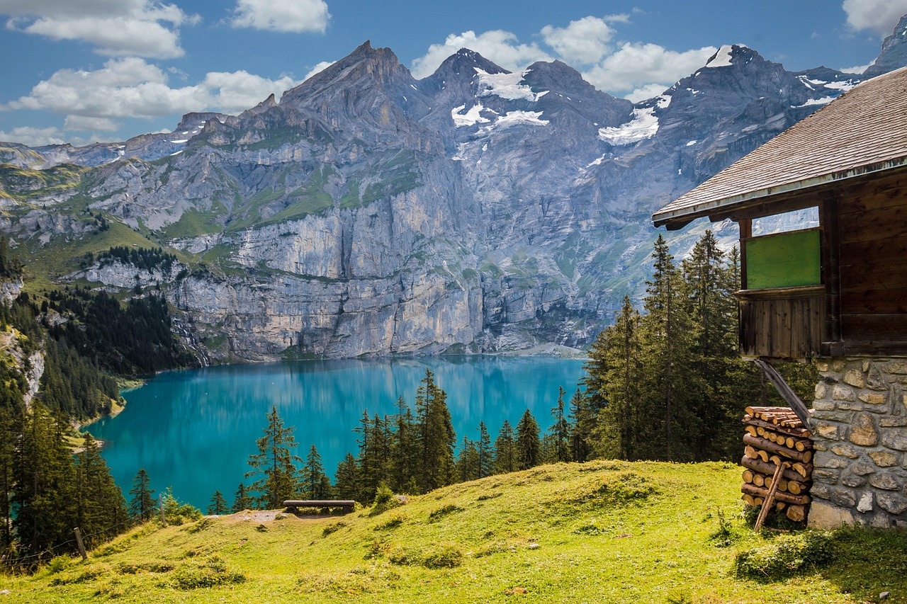
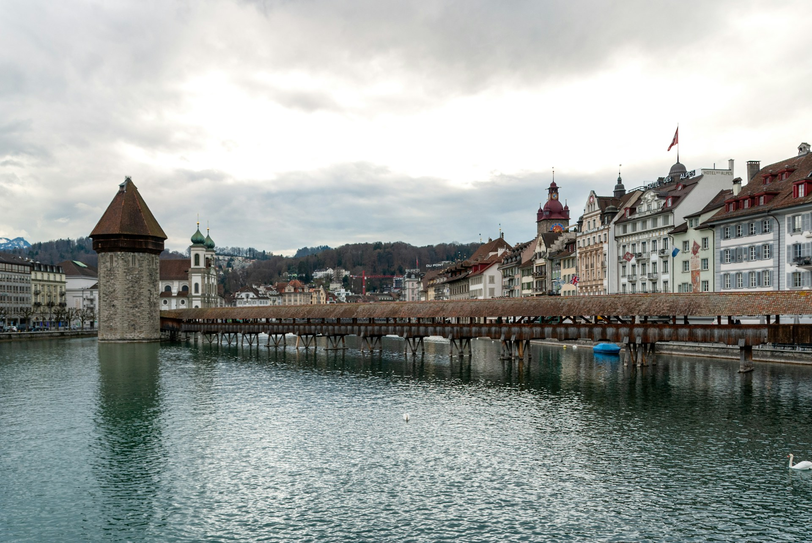
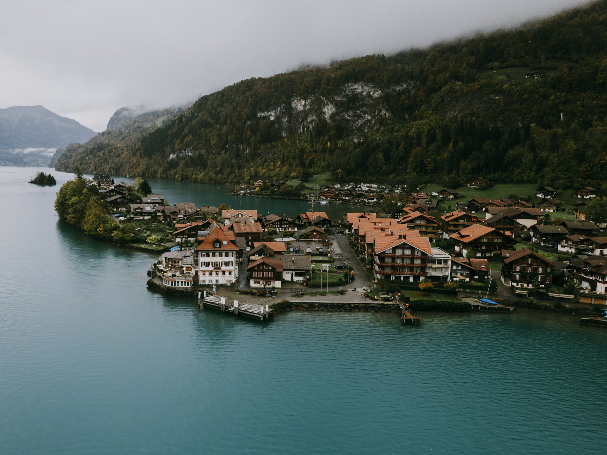

Lago de Ginebra
Uno de los lagos más grandes de Europa occidental.
- ⭐ Destacado: vistas de los Alpes y viñedos
- ⏱ Tiempo recomendado: 1 – 2 días
- ⛵ Actividad: paseos en barco
Aguas turquesas rodeadas de montañas y paisajes únicos

Uno de los lagos más grandes de Europa occidental.

Lago rodeado por montañas y pueblos encantadores.

Lago alpino famoso por su color turquesa intenso.

Lago alpino rodeado de castillos medievales.